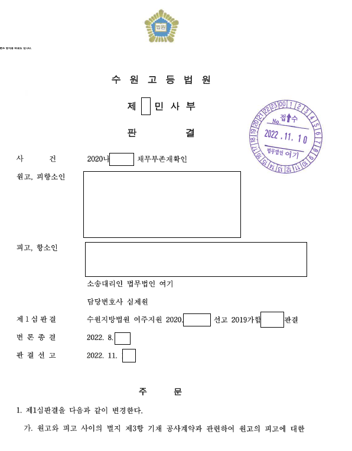
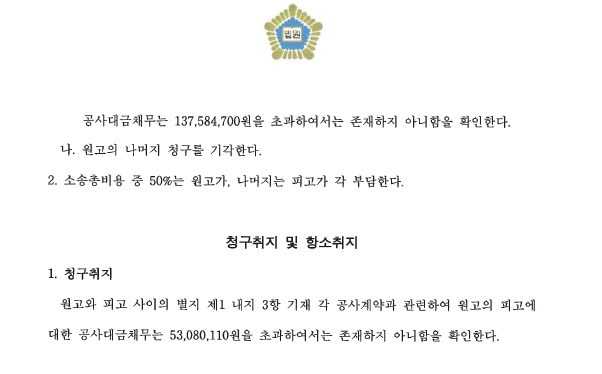

01사건 개요
건설현장에서 하도급 공사를 하던 의뢰인이 중간에 공사를 그만두면서, 원청 현장소장에게서 기성고와 관계없이 대금 100%를 주겠다는 약속을 받았습니다. 그런데 공사를 그만두자 원청은 대금을 주지 않고 오히려 채무부존재 확인소송을 냈고, 의뢰인은 1심에서 전부 패소했습니다.
02쟁점
- 현장소장이 기성고와 관계없이 공사대금을 주기로 한 약속이 원청을 구속하는지
- 현장소장에게 공사대금을 증액할 권한이 있었는지
03변호사가 한 일
- 항소심에서 추가 증거를 내고, 우리에게 적대적인 현장소장을 증인으로 신청했습니다.
- 증인이 출석을 피해 기일이 여러 번 미뤄졌지만 신문 사항을 꼼꼼히 준비해 증인신문을 마쳤습니다.
- 현장소장의 권한에 대한 서면을 따로 정리해 제출했습니다.
04결과
항소심에서 1심보다 약 8,000만 원 이상이 더 인정됐고, 소송 총비용도 양쪽이 50%씩 부담하게 됐습니다.


이 사례는 원문을 요약해 정리한 것입니다. 사건 경과와 판결문 등 전체 내용은 로톡에 게시된 원문에서 볼 수 있습니다.
로톡에서 전문 보기 →05비슷한 상황이라면
채무부존재 확인소송에서 이겨도 그 판결만으로는 강제집행을 할 수 없습니다. 받을 돈이 있다면 반소를 함께 검토하세요.
공사대금을 받아야 하는데 오히려 채무부존재 확인소송을 당했습니다.
채무부존재 확인소송에서 이겨도 그 판결만으로는 강제집행을 할 수 없어, 받을 돈이 있다면 반소로 대금 지급을 함께 청구하는 것을 검토해야 합니다. 1심에서 전부 졌던 하도급 업체가 항소심에서 공사대금 약 8,000만 원을 더 인정받은 사례가 있습니다.
현장소장이 말로 한 공사대금 약속도 효력이 있나요?
현장소장에게 그런 약속을 할 권한이 있었는지가 핵심 쟁점이 됩니다. 현장소장을 증인으로 신문하고 권한에 대한 서면을 따로 내, 항소심에서 1심보다 약 8,000만 원 이상의 공사대금이 더 인정된 사례가 있습니다.
물품대금 소송을 당했는데 저도 받을 돈이 있습니다.
상대방에게 받을 채권이 있다면 상계항변으로 청구 금액을 줄일 수 있습니다. 1억 2천만 원 물품대금 청구를 상계항변으로 약 250만 원까지 줄인 사례가 있습니다.
평일 09:00–18:00 변호사가 직접 전화를 받습니다.
재판으로 자리에 없는 경우 로톡으로 상담을 신청하시거나 이메일로 문의해 주세요.
의뢰인이 특정되지 않도록 사실관계를 일부 줄이거나 바꾸어 정리했습니다. 사건의 결과는 구체적인 사실관계와 증거에 따라 달라질 수 있으며, 같은 결과를 보장하지 않습니다.